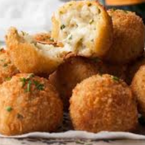

EGGLESS RISOTTO BALLS RECIPE
PREPARATION TIME - 20 MINUTES
FRYING TIME - 5 MINUTES
TOTAL TIME - 25 MINUTES
YIELD - 20 BALLS
INGREDIENTS FOR EGGLESS RISOTTO BALLS
- 1 TBSP OIL
- 1/4 cup finely chopped onions
- 1/4 cup finely chopped capsicum
- 2 tsp finely chopped garlic
- 1 tbsp finely chopped green chilies
- 1 cup soft cooked rice
- 1/2 cup milk
- 1 cup shredded spinach
- salt and pepper to taste
- nutmeg powder - a pinch
- 1 tsp oregano
- 1 tsp chill flakes
- 4 tbsp grated cheese
- 1 cup breadcrumbs
- 2 tbsp maida
- 1/4 cup water
- 1/2 cup crushed cornflakes
- Oil for frying
METHOD FOR EGGLESS RISOTTO BALLS
- Heat oil in a pan and add onions , capsicum,garlic , and green chili,saute for a while , add cooked rice and milk and cook till the mixture is thick .Add the other ingredients and let it cool
- Add breadcrumbs and cheese to make the mixture tight.Make 10 -20 risotto balls , you can fill the balls with a cube of mozzarella cheese .
- Now make the maida - water paste by adding water to the maida , dip the balls in the maida paste and roll them in crushed cornflakes
- Deep fry in hot oil on medium flame till golden brown.
- Our risotto balls are ready !
- Serve hot with hot sauce or tomato sauce for best flavor profile